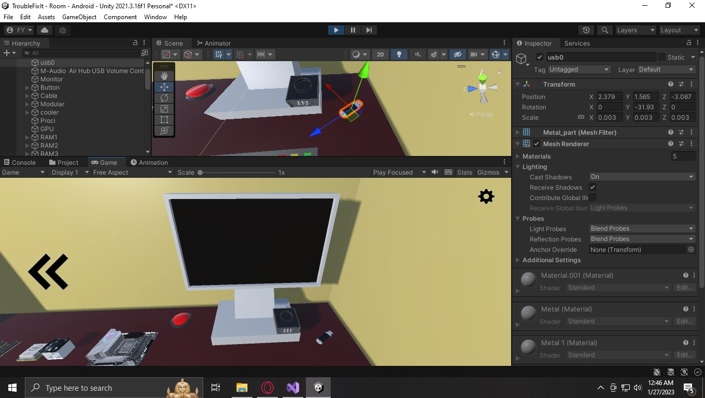
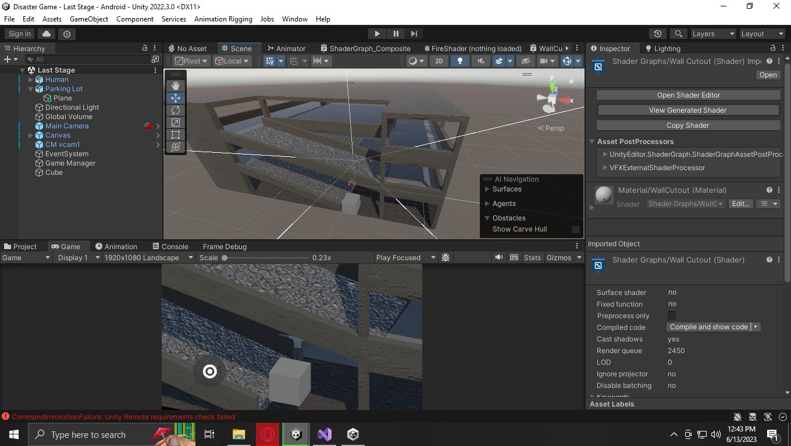
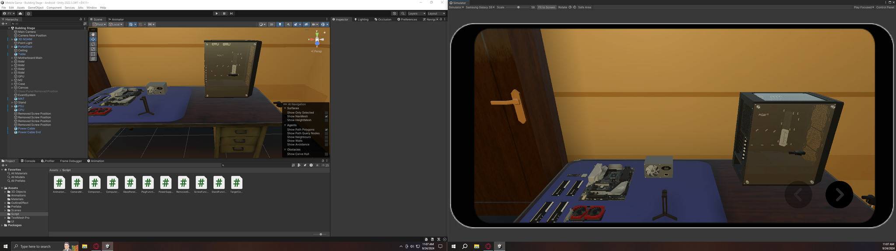
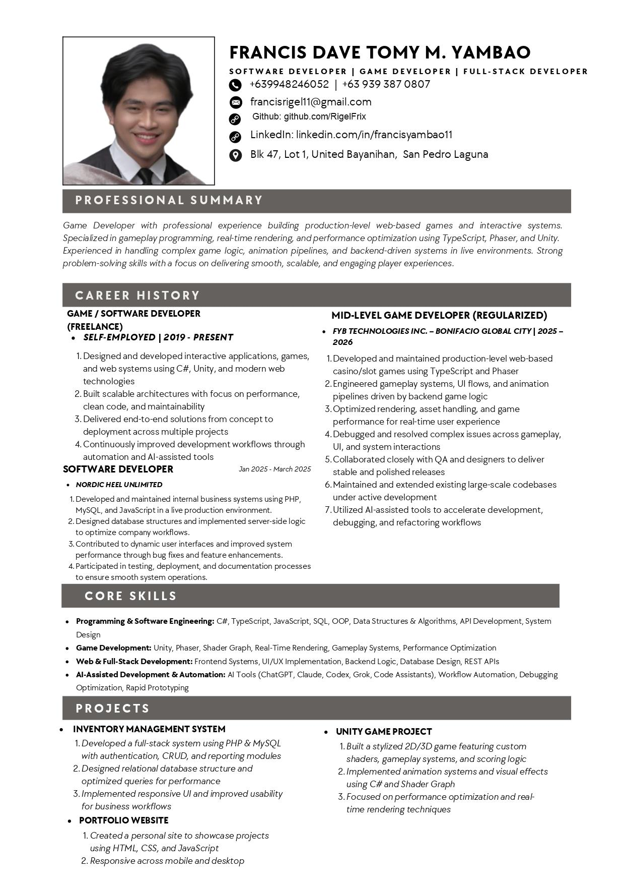

// Francis Dave Tomy M. Yambao
I build production-ready games and interactive systems engineered for stability, performance, and release.
Mid-level software developer with production experience across web-based games, Unity development, and backend systems. I work across gameplay flow, UI behavior, backend logic, debugging, and performance under real-world constraints.
Unity Since 2019
TypeScript + Phaser
Cocos Hands-On
Interactive UI Flow
Backend-Driven Logic
Performance Debugging
PHP + MySQL Systems
AI-Assisted Engineering
// Profile & Direction
Built through real execution, not just theory.
My path started in Unity and game development, expanded into web technologies and full-stack systems, and grew into professional production work where reliability, speed, and engineering quality matter every day.
I started building in 2019 with a strong focus on Unity, gameplay systems, and interactive experiences. That naturally pushed me toward rendering, UI behavior, input flow, and the details that make software feel responsive rather than merely functional.
Over time, I expanded into web development and backend systems, which gave me a wider understanding of how products are actually delivered: frontend behavior, API logic, database structure, production bugs, and the operational side of software that people depend on.
The result is a practical profile that combines game development instincts with full-stack engineering experience. I work best in environments where systems need both polish and discipline.
Started With Unity
Started in Unity by building gameplay systems directly, using hands-on iteration to develop instincts around feel, interaction, and technical behavior.
Expanded Into Web & Systems
Moved deeper into TypeScript, JavaScript, PHP, SQL, and the business logic behind full-stack applications.
Shipped Real Web Games
Worked inside a BGC-based production environment on web-based games with Phaser, TypeScript, and Cocos-linked systems.
Engineering Quality Focus
Growing toward stronger software development with emphasis on interactive systems, scalable architecture, and performance.
Execution-First
I learn by shipping, testing, and reverse-engineering.
I prefer understanding how systems behave in practice rather than memorizing theory without application.
Quality Mindset
Clean logic, maintainable code, and careful debugging.
I aim for code that can survive pressure, changing requirements, and real users rather than only looking good in isolation.
Long-Term Growth
Focused on becoming a stronger engineer, not staying comfortable.
I actively look for environments that improve both my technical depth and the way I collaborate with a team.

TroubleFixIt
Commissioned research support build

Disaster Game
Mobile disaster escape simulation

Build2Connect
Finished guided PC-building game for mobile and desktop
// Project Chapters
Selected work across production systems, shipped games, and focused R&D.
Each card below opens into the media, build notes, and implementation context behind the work. The goal is to show shipped systems, technical range, and the decisions behind delivery.
Featured Work
Project chapters built around shipped work and real implementation
Software Systems
Inventory Management System
The software side of my work is grounded in real delivery too: backend logic, reporting, relational data design, and workflow-driven problem solving built with PHP, MySQL, and JavaScript.
Why This Mix Matters
Game feel on the surface, engineering depth underneath.
My strongest edge is combining gameplay-oriented implementation with practical software engineering. I can move from player-facing interaction and realtime behavior into backend logic, databases, production debugging, and system cleanup when the project needs it.
- Production web games built with TypeScript, Phaser, and Cocos-based systems.
- Independent Unity R&D focused on interaction, rendering, and gameplay systems.
- Internal systems that required database design and business workflow support.
// Skill Architecture
Hands-on strengths shaped by shipping, debugging, and adaptation.
I am most useful in roles that need someone who can build, debug, reason about systems deeply, and stay productive even when the work becomes messy or unclear.
Game Development
Interactive systems, gameplay flow, and player-facing logic.
- Unity development since 2019
- Gameplay systems, UI behavior, and animation pipelines
- Phaser production work and Cocos-related hands-on experience
- Shader Graph and rendering-aware experimentation
Frontend & UX
Interfaces that need to feel responsive, clear, and coherent.
- Interactive UI flow and real-time feedback behavior
- Strong debugging instincts in complex frontends
- Ability to work inside unfamiliar codebases quickly
- Focus on systems that users actually feel while using them
Full-Stack Systems
Backend logic, databases, and internal business tooling.
- PHP, JavaScript, SQL, REST-style backend logic
- MySQL database design for real workflow requirements
- Bug fixing and system improvement in production environments
- Practical delivery across frontend, backend, and data layers
Engineering Mindset
Clean implementation, validation, and steady execution under pressure.
- Performance optimization for real-time applications
- AI-assisted workflow with logic-first validation
- Collaborative work with QA, designers, and developers
- Adaptable in unstable environments and shifting priorities
Technical Stack
Languages, engines, tools, and workflows I use in real work.
C#
TypeScript
JavaScript
PHP
SQL
Unity
Phaser
Cocos
Shader Graph
REST APIs
MySQL
Git
VS Code
ChatGPT
Copilot
Cursor
// Experience Story
Experience shaped by real production constraints and steady self-improvement.
My professional background combines production game work, internal business systems, and a long-running habit of building personal projects to sharpen my engineering instincts.
Production Game Developer
Mid-level game development in a real company environment.
Worked on web-based games using TypeScript, Phaser, and Cocos-based systems. Built and maintained gameplay systems, UI flows, animation behavior, and backend-driven logic in shipping products.
Full-Stack Delivery
Internal tools and workflow-focused systems.
Built and improved full-stack systems with PHP, MySQL, and JavaScript, including database design, backend logic, performance improvements, and production bug resolution.
Work Ethic & Mindset
Adaptable, resilient, and focused on long-term growth.
Comfortable in high-pressure and shifting environments. I stay productive when requirements are unclear, stay effective inside unstable systems, and keep raising the quality of the work through hands-on problem solving.
Career Direction
Growing toward stronger software development in interactive systems.
I am aiming for environments with stronger engineering practices, healthy collaboration, and room to keep growing in game development, frontend systems, and performance-focused software work.
- Interested in interactive systems, game development, and performance-driven applications.
- Open to roles that combine frontend, game development, and modern AI-assisted workflows.
- Looking for teams that value structure, ownership, and real engineering quality.
// Resume & Availability
Available for teams that need execution, debugging depth, and reliable delivery.
I am open to new opportunities and can start immediately or within a short notice period. The roles that fit me best are those where interactive systems, practical delivery, and thoughtful debugging all matter.
What I Bring
- Production-level work in web-based game systems
- Full-stack support for real business workflows
- Strong debugging and adaptation in unfamiliar codebases
Best-Fit Environments
- Structured engineering practices and healthy collaboration
- Teams shipping interactive products with real constraints
- Work that rewards ownership, system thinking, and clean execution

// Contact
Available for interactive, gameplay, and full-stack roles.
Open to teams that need someone who can build features, debug unstable systems, and help ship polished interactive products.